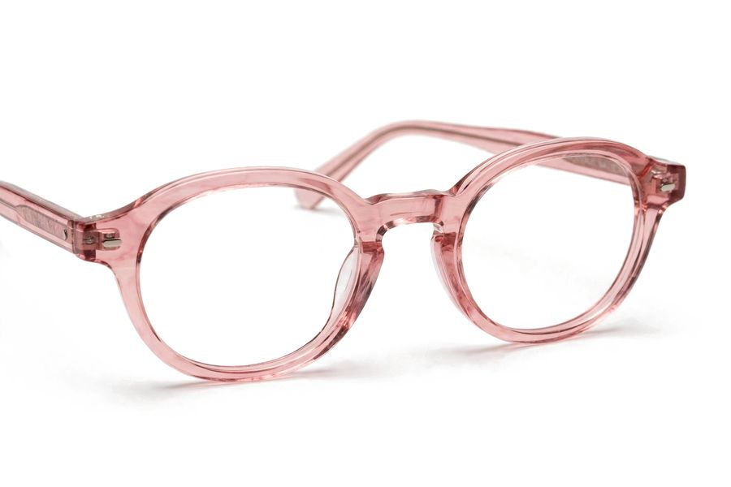

‹Catálogo›GR3350

Lentes de leitura transparentes
GR3350 · Leitura · acetato
VenderEstoqueVendasSitePreço
Grau
+1,00+1,50+2,00+2,50+3,00
Preço de balcãoG$ 115.000
1 · Ficha única do produto (Vender)A mesma peça com 5 abas no topo. Abre igual de qualquer lugar: Catálogo, Inventário, Histórico, Pedidos, Reposição, busca. Volta para a aba que você usou por último.
‹Catálogo›GR3350
Lentes de leitura transparentes
VenderEstoqueVendasSitePreço
Por cor e grau
Transparente+1,00 3 · +1,50 2 · +2,00 2 · +3,00 18 un.
Preto+1,50 2 · +3,00 13 un.
Lote
Kazwini · 31/12custo US$ 4,20 · repor US$ 4,60abrir ›
Vendas
30 dias6 vendidas · 2 no site
Última vendahá 3 dias ›
1 · Mesma ficha, aba EstoqueTudo do inventário sem sair: cores, graus, lote, custo. Aba Vendas = histórico da peça; Site = vistas, carrinhos, publicado ou não; Preço = faixa, piso, oferta.
‹Início›Histórico
Hoje
GR3350 +1,50 · Ana Souza10:42 · dinheiroG$ 115.000
SL2210 · balcão10:15 · ItaúG$ 130.000
Pedido #1042 · Bia R.09:30 · site · PIXG$ 233.000
Avisos
🔥 SL2255 muito vista sem carrinho
📦 +1,00 acabou
Tocar num link abre a ficha certa: peça (1), cliente, pedido, grau (Reposição).
2 · Tudo vira linkCódigo de peça, nome de cliente, número de pedido e grau ficam sublinhados em qualquer lista (Histórico, Pedidos, Avisos, Semana do site, Caixa) e abrem a tela deles.
Início›Números
ResumoDinheiroGiroPreçosOnline
Vendido hojeG$ 466.500›
Parado 60+ diasUS$ 1.240›
No estoqueUS$ 9.870›
Carrinhos parados5›
Parado 60+ dias · 14 peças
SL225574 dias · 9 un.Vender com saída
AC105568 dias · 4 un.Vender com saída
Cada número tem ›: toca e abre a lista por trás dele.
3 · Número que abre o que está por trásVendido hoje → vendas de hoje; Parado 60+ → as peças paradas; No estoque → Inventário; Carrinhos parados → Online (4). Nada de procurar a tela.
Números›Online
ResumoDinheiroGiroPreçosOnline
Visitas 7 dias1.240+18%
Pedidos do site9G$ 2,1 mi
Carrinhos3724% viram pedido
Testes do Mochi212
Mais vistas
SL2210312 vistas · 41 carrinhos
SL2255 sem carrinho298 vistas
Buscado e não achado
"aviador"ver na Reposição ›
Painel completo continua em Loja › Analisador.
4 · Aba Online dentro de NúmerosO desempenho do site direto no app (os mesmos números do Analisador), com links: peça abre a ficha na aba Site, pedido abre o pedido, busca sem resultado abre a Reposição.

Solar gatito blanco
VenderEstoqueVendasSitePreço
Preço de balcãoG$ 135.000
PisoG$ 96.000
Saída sugeridaG$ 108.000
‹ volta para o Giro, na mesma posição da lista. Tocar em "Números" no caminho pula direto para lá.
5 · Caminho no topo + Voltar certoMostra onde você está e de onde veio. O ‹ (e o voltar do celular) sempre retorna para a tela anterior, na mesma rolagem e filtro. Cada parte do caminho é tocável.
🔍 Buscar peça, cliente, função…
RECENTES
GR3350👤 Ana Souza🧾 #1042SL2255📊 GiroVendido hoje · 7 vendasG$ 466.500
6 · RecentesAs últimas 5 coisas que você abriu (peças, clientes, pedidos, telas), embaixo da busca do Início. Um toque e volta lá.
‹Clientes›Ana Souza
Ana Souza
0981 123 4563 compras · última há 12 dias
Compras
GR3350 +1,5002/11 · lojaG$ 115.000
Pedido #104218/10 · siteG$ 233.000
+ Nova venda para Ana
Na peça (Estoque): Vender esta
No pedido: Abrir cliente
No Giro: Vender com saída
Na Reposição: Montar lista
No pedido: Abrir cliente
No Giro: Vender com saída
Na Reposição: Montar lista
7 · Botão de ação que muda por telaUm botão só, no canto, com a próxima ação mais comum daquela tela. Some quando não faz sentido.

Armação redonda rosa
AC1055 · 68 dias parada · 4 un.
VenderEstoqueVendasSitePreço
‹ SL22552 de 14 · ParadosRX2210 ›
8 · Deslizar para a próxima peçaNa ficha, deslizar para o lado passa para a próxima peça da lista de onde você veio (Parados, busca, Reposição), sem voltar. Mantém a mesma aba.